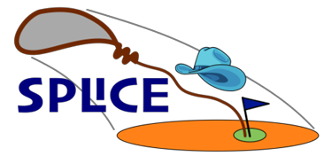
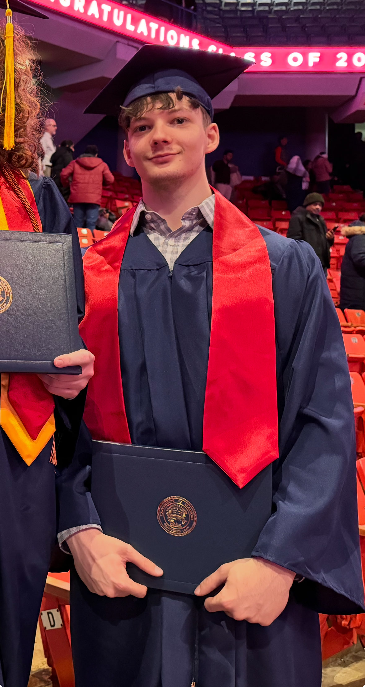
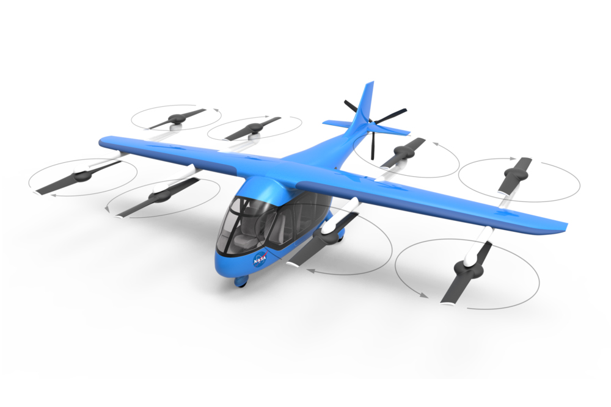
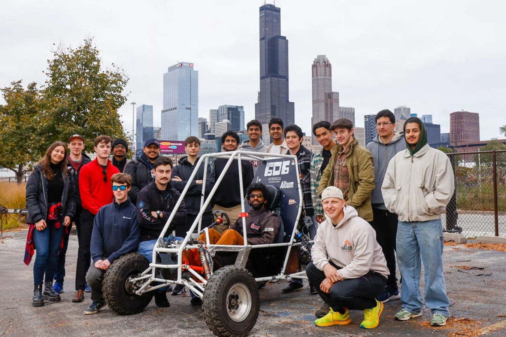

Aleksandar Dyulgerov
A chronological overview of my major engineering projects, internships, and research work across aerospace, robotics, and computer science.
Fall 2025
GN&C Research Lead, Hopper — Yellow Jacket Space Program (Georgia Tech). Leading 6-DoF active control simulations for thrust-vector control (TVC) and reaction-control system (RCS) software.

Fall 2025
EG2 Spacecraft GN&C intern at NASA JSC. Developing and testing sensor acquisition software and implementing rate based MEKF in SPLICE (Safe and Precise Landing-Integrated Capabilities Evolution) FSW.

Summer 2025
Spacecraft GN&C software intern at Karman+. Developed and tuned a quaternion PID controller, integrated a quaternion ESKF for precise state estimation, and designed RCS thruster mixing logic to produce pure translational control forces for translational and altitude PID controllers.

Fall 2024
Graduated with a B.S. in Mechanical Engineering (Dean’s List) and CS minor from University of Illinois at Chicago

Summer 2024
Autonomous Flight Control Intern at NASA ARC. Derived INDI forces and moments for NASA’s Lift+Cruise eVTOL and adapted the GUAM model for general kinematics. Implemented a glideslope landing mode where an LQRi controller with a Bézier trajectory was used only as a comparison baseline, while the inner-loop INDI was simulated in MATLAB.

Oct 2023 - Spring 2024
Developed perception and automation algorithms for a 6-DoF robotic arm, optimized performance for major FPS and success-rate gains, led the team’s programming and navigation efforts, and helped secure AI Accelerator funding and win UIC’s Engineering EXPO.

Mar 2023 - Jan 2024
Owned the design of the low-voltage electronics enclosure in SOLIDWORKS for the eBaja vehicle, ensured FSAE compliance, and supported wiring and assembly during final integration.

Summer 2022
FNAL Data Science & ML intern. Studied clustering methods for Linac fault prediction at Fermilab, using UMAP reduction and comparing K-Means vs GMM on outage datasets. Assessed performance using homogeneity and completeness scores to support future automated mitigation of unplanned accelerator downtime, and documented results in an 11-page technical paper.